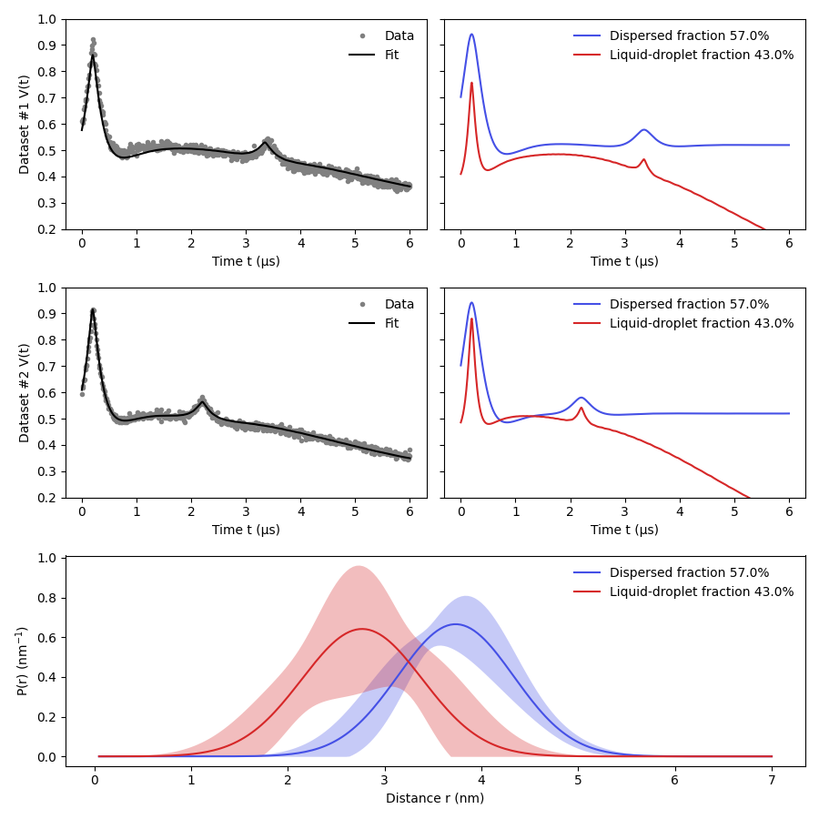

Note
Go to the end to download the full example code.
Global analysis of 5-pulse DEER on a liquid-droplet protein system¶
Certain protein systems can form fractions of protein either in a liquid-droplet or dispersed states. Each of these fractions gives rise to a different dipolar signal which are combined into a detected signal. Due to the differences in local concentration the intermolecular contributions for each fraction are completely different and can be modelled in a global manner.
As in the publication referenced below, this example will take two 5-pulse DEER signals acquired on the same sample with slightly different pulse sequence delays and fit it globally to the droplet signal model.
For the original model and more information on these systems please refer to: Emmanouilidis, L., Esteban-Hofer, L., Damberger, F.F. et al. NMR and EPR reveal a compaction of the RNA-binding protein FUS upon droplet formation. Nat Chem Biol 17, 608–614 (2021). https://doi.org/10.1038/s41589-021-00752-3
Goodness-of-fit:
========= ============= ============= ===================== =======
Dataset Noise level Reduced 𝛘2 Residual autocorr. RMSD
========= ============= ============= ===================== =======
#1 0.011 2.480 1.271 0.017
#2 0.008 1.554 0.582 0.009
========= ============= ============= ===================== =======
Model hyperparameters:
==========================
Regularization parameter
==========================
0.00e+00
==========================
Model parameters:
============ ========== ========================= ====== ===============================
Parameter Value 95%-Confidence interval Unit Description
============ ========== ========================= ====== ===============================
lam1 0.422 (0.411,0.433) Amplitude of pathway #1
reftime1 0.198 (0.196,0.201) μs Refocusing time of pathway #1
lam2 0.059 (0.053,0.064) Amplitude of pathway #2
reftime2_1 3.351 (3.328,3.375) μs Refocusing time of pathway #2
kdis 8.39e-22 (0.00e+00,0.018) μs⁻¹ Decay rate
rmean_dis 3.735 (3.546,3.923) nm Mean
std_dis 0.599 (0.481,0.718) nm Standard deviation
eta 0.570 (0.468,0.570) None Weighting factor
kld 0.011 (0.005,0.016) μs⁻¹ Decay rate
Dld 2.635 (2.144,3.127) Stretch factor
rmean_ld 2.768 (2.486,3.049) nm Mean
std_ld 0.622 (0.313,0.931) nm Standard deviation
reftime2_2 2.205 (2.195,2.215) μs Refocusing time of pathway #2
scale_1_1 1.000 (frozen) None Overall echo amplitude/scale
scale_2_1 1.000 (frozen) None Overall echo amplitude/scale
scale_1_2 1.000 (frozen) None Overall echo amplitude/scale
scale_2_2 1.000 (frozen) None Overall echo amplitude/scale
============ ========== ========================= ====== ===============================
import deerlab as dl
import numpy as np
import matplotlib.pyplot as plt
violet = '#4550e6'
# Load experimental data
t1,Vexp1 = np.load('../data/example_droplets_data_1.npy')
t2,Vexp2 = np.load('../data/example_droplets_data_2.npy')
# Put all datasets into lists
ts = [t1,t2]
Vs = [Vexp1,Vexp2]
# Distance vector
r = np.linspace(0.05,7,200)
# Model of a dipolar signal in arising from a dispersed and liquid-droplet states
#----------------------------------------------------------------------------------
def dropletmodel(t):
# Dispersed-state component model
Vdis_model = dl.dipolarmodel(t,r, Pmodel=dl.dd_gauss, Bmodel=dl.bg_exp, npathways=2)
# Liquid-droplet-state component model
Vld_model = dl.dipolarmodel(t,r, Pmodel=dl.dd_gauss, Bmodel=dl.bg_strexp, npathways=2)
# Create a dipolar signal model that is a linear combination of both components
Vmodel = dl.lincombine(Vdis_model,Vld_model, addweights=True)
Vmodel = dl.link(Vmodel,
reftime1=['reftime1_1','reftime1_2'],
reftime2=['reftime2_1','reftime2_2'],
lam1=['lam1_1','lam1_2'],
lam2=['lam2_1','lam2_2'])
Vmodel.scale_1.freeze(1)
Vmodel.scale_2.freeze(1)
# Make the second weight dependent on the first one
Vmodel = dl.relate(Vmodel,weight_2 = lambda weight_1: 1 - weight_1)
return Vmodel,Vdis_model,Vld_model
#----------------------------------------------------------------------------------
# Generate the models
Vmodel1,Vdismodel1,Vldmodel1 = dropletmodel(ts[0])
Vmodel2,Vdismodel2,Vldmodel2 = dropletmodel(ts[1])
# Create the global model
globalModel = dl.merge(Vmodel1,Vmodel2)
# Link global parameters toghether with new names
globalModel = dl.link(globalModel,
eta = ['weight_1_1','weight_1_2'],
kdis = ['decay_1_1','decay_1_2'],
kld = ['decay_2_1','decay_2_2'],
Dld = ['stretch_2_1','stretch_2_2'],
rmean_dis = ['mean_1_1','mean_1_2'],
rmean_ld = ['mean_2_1','mean_2_2'],
std_dis = ['std_1_1','std_1_2'],
std_ld = ['std_2_1','std_2_2'],
lam1 = ['lam1_1','lam1_2'],
lam2 = ['lam2_1','lam2_2'],
reftime1 = ['reftime1_1','reftime1_2'])
# Specify parameter boundaries and initial conditions
globalModel.eta.set( lb=0.468, ub=0.57, par0=0.520)
globalModel.kdis.set( lb=0.0, ub=0.09, par0=0.01)
globalModel.kld.set( lb=0.0, ub=1, par0=0.12)
globalModel.Dld.set( lb=2, ub=4, par0=2.5)
globalModel.rmean_dis.set( lb=3, ub=6.35, par0=3.7)
globalModel.rmean_ld.set( lb=1, ub=4.35, par0=2.6)
globalModel.std_dis.set( lb=0.25, ub=0.74, par0=0.44)
globalModel.std_ld.set( lb=0.2, ub=2, par0=0.7)
globalModel.lam1.set( lb=0.3, ub=0.5, par0=0.4)
globalModel.lam2.set( lb=0.0, ub=0.2, par0=0.08)
globalModel.reftime1.set( lb=0.1, ub=0.3, par0=0.2)
globalModel.reftime2_1.set(lb=3.2, ub=3.8, par0=3.4)
globalModel.reftime2_2.set(lb=2.0, ub=2.5, par0=2.2)
# Fit the model to the data
fit = dl.fit(globalModel,Vs)
print(fit)
# Plot the results
plt.figure(figsize=[9,9])
violet = '#4550e6'
plt.subplot(3,2,1)
plt.plot(ts[0],Vs[0],'.',color='grey',label='Data')
plt.plot(ts[0],fit.model[0],color='k',label='Fit',linewidth=1.5)
plt.ylim([0.2,1])
plt.legend(frameon=False,loc='best')
plt.xlabel('Time t (μs)')
plt.ylabel('Dataset #1 V(t)')
ax2 = plt.subplot(3,2,2)
Vdis_fit = Vdismodel1(decay=fit.kdis,mean=fit.rmean_dis,std=fit.std_dis,reftime1=fit.reftime1,reftime2=fit.reftime2_1,lam1=fit.lam1,lam2=fit.lam2,scale=1)
Vld_fit = Vldmodel1(decay=fit.kld,stretch=fit.Dld,mean=fit.rmean_ld,std=fit.std_ld,reftime1=fit.reftime1,reftime2=fit.reftime2_1,lam1=fit.lam1,lam2=fit.lam2,scale=1)
ax2.plot(ts[0],Vdis_fit,color=violet,label=f'Dispersed fraction {fit.eta*100:.1f}%')
ax2.plot(ts[0],Vld_fit,color='tab:red',label=f'Liquid-droplet fraction {(1-fit.eta)*100:.1f}%')
ax2.set_yticklabels([])
ax2.legend(frameon=False,loc='best')
ax2.set_ylim([0.2,1])
ax2.set_xlabel('Time t (μs)')
plt.subplot(3,2,3)
plt.plot(ts[1],Vs[1],'.',color='grey',label='Data')
plt.plot(ts[1],fit.model[1],color='k',label='Fit',linewidth=1.5)
plt.ylim([0.2,1])
plt.legend(frameon=False,loc='best')
plt.xlabel('Time t (μs)')
plt.ylabel('Dataset #2 V(t)')
ax4 = plt.subplot(3,2,4)
Vdis_fit = Vdismodel2(decay=fit.kdis,mean=fit.rmean_dis,std=fit.std_dis,reftime1=fit.reftime1,reftime2=fit.reftime2_2,lam1=fit.lam1,lam2=fit.lam2,scale=1)
Vld_fit = Vldmodel2(decay=fit.kld,stretch=fit.Dld,mean=fit.rmean_ld,std=fit.std_ld,reftime1=fit.reftime1,reftime2=fit.reftime2_2,lam1=fit.lam1,lam2=fit.lam2,scale=1)
ax4.plot(ts[1],Vdis_fit,color=violet,label=f'Dispersed fraction {fit.eta*100:.1f}%')
ax4.plot(ts[1],Vld_fit,color='tab:red',label=f'Liquid-droplet fraction {(1-fit.eta)*100:.1f}%')
ax4.set_yticklabels([])
ax4.legend(frameon=False,loc='best')
ax4.set_xlabel('Time t (μs)')
ax4.set_ylim([0.2,1])
plt.subplot(3,1,3)
Pdis_fcn = lambda rmean_dis,std_dis: dl.dd_gauss(r,rmean_dis,std_dis)
Pld_fcn = lambda rmean_ld,std_ld: dl.dd_gauss(r,rmean_ld,std_ld)
Pdis_uq = fit.propagate(Pdis_fcn,lb=np.zeros_like(r))
Pld_uq = fit.propagate(Pld_fcn,lb=np.zeros_like(r))
plt.plot(r,Pdis_fcn(fit.rmean_dis,fit.std_dis),label=f'Dispersed fraction {fit.eta*100:.1f}%',color=violet)
plt.fill_between(r,Pdis_uq.ci(95)[:,0],Pdis_uq.ci(95)[:,1],alpha=0.3,linewidth=0,color=violet)
plt.plot(r,Pld_fcn(fit.rmean_ld,fit.std_ld),label=f'Liquid-droplet fraction {(1-fit.eta)*100:.1f}%',color='tab:red')
plt.fill_between(r,Pld_uq.ci(95)[:,0],Pld_uq.ci(95)[:,1],alpha=0.3,linewidth=0,color='tab:red')
plt.legend(frameon=False,loc='best')
plt.xlabel('Distance r (nm)')
plt.ylabel('P(r) (nm$^{-1}$)')
plt.tight_layout()
plt.show()
Total running time of the script: (0 minutes 27.080 seconds)